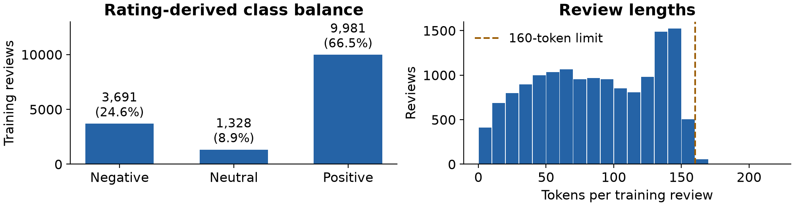
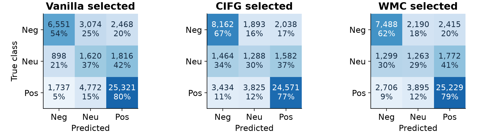

Vanilla LSTM, CIFG and Working Memory Connections
Ismail Ighmour
Universite Internationale de Rabat
Advanced NLP, 2026/2027
Input: review text only
Ratings 1-4: Negative
Ratings 5-6: Neutral
Ratings 7-10: Positive
Ratings define targets and never enter the model

66.54% Positive and 8.85% Neutral in training
160 tokens retain complete text for 99.54% of training reviews
32,111 cleaned training texts also appear in raw test
Exclude these texts before splitting training data
15,000 training, 3,000 validation, 48,257 test reviews
Same partitions and train-only vocabulary for all models
Vanilla: independent input, forget and output gates
CIFG: input gate i = 1 - f
WMC: tanh memory projections enter the gates
WMC output gate reads the updated memory c_t
All linear operations use nn.Linear
| Cell | Recurrent parameters | Total parameters |
|---|---|---|
| Vanilla | 12,416 | 780,515 |
| CIFG | 9,312 | 777,411 |
| WMC | 15,488 | 783,587 |
CIFG reduces recurrent parameters by 25%
The shared embedding has 768,000 parameters
| Setting | Vanilla val F1 | CIFG val F1 | WMC val F1 |
|---|---|---|---|
| fixed | 0.5425 | 0.5558 | 0.5571 |
| lr_0.001 | 0.5576 | 0.5652 | 0.5447 |
| batch_128 | 0.5657 | 0.5547 | 0.5556 |
| adam | 0.3389 | 0.2663 | 0.2856 |
Fixed: AdamW, LR 0.003, batch 256
One-factor changes: LR 0.001, batch 128, Adam
Six-epoch maximum and validation-based early stopping
| Cell | Fixed accuracy | Fixed F1 | Selected setting | Selected F1 |
|---|---|---|---|---|
| Vanilla | 65.80% | 0.5501 | batch_128 | 0.5583 |
| CIFG | 67.78% | 0.5484 | lr_0.001 | 0.5650 |
| WMC | 70.41% | 0.5583 | fixed | 0.5583 |
All scores use the same 48,257 test reviews
Selected settings follow validation Macro-F1

Neutral ratings cover mixed experiences
Single seed, reduced training data and compact hidden state
Exact deduplication leaves paraphrases and group risks
Validation-selected candidate: Vanilla (vanilla_batch_128)
Custom cells support a controlled, measured comparison
Next: full training pool, repeated seeds and broader tuning
Pretrained embeddings and attention are useful extensions